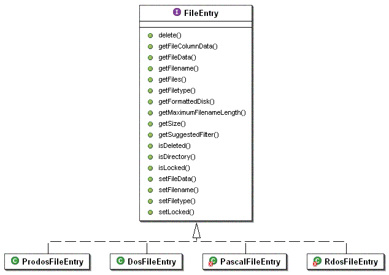

UML diagrams
Disk and FormattedDisk
Generally, a Disk represents an Apple ][ disk image. This can be size, any order, and any
format. The Disk class itself manages the varying disk order (DOS, ProDOS, or their variants)
simply by the file extension. Disks that are formatted with an operating system are managed
by the subclasses of FormattedDisk. The general user interface(s) can then work with a
FormattedDisk without knowing about the specific operating system.

Somewhat surprisingly, a Disk can contain multiple FormattedDisks. By structuring the disk image
in this manner, the 800K DOS formats can be accommodated (yielding two 400K DOS FormattedDisks -
which models the physical behavior rather nicely). Additionally, other configurations
can be accommodated in the future - Pascals multiple volume configuration or a ProDOS volume
hosting DOS 3.3 and/or Pascal volumes.
FileEntry
Each Disk contains multiple files. The file is represented by a FileEntry. You will note that
the attributes exposed by the FileEntry interface are pretty generic. To accommodate the various
views available, the getFileColumnData method was added. This method will, depending on the
setting, return a standard view, a native view (mimics the native catalog/directory display), and
a detailed view (giving all available data on the files).

FileFilter
In order to allow AppleCommander to export files easily, the concept of a FileFilter was added.
A FileFilter simply takes the raw data from the FileEntry and then processes it according to the
filter. Adding new filters is as easy as implementing the FileFilter interface and then hooking
it into the user interface!

ProdosCommonEntry
Just to be complete, ProDOS yielded itself to a simple object hierarchy.